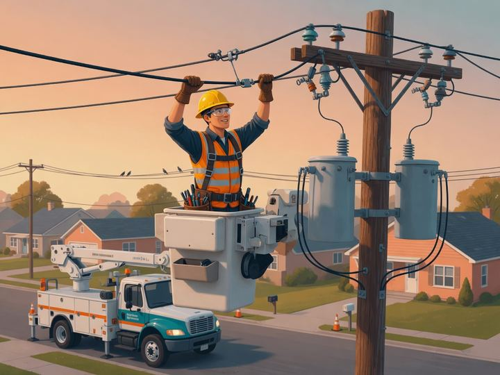
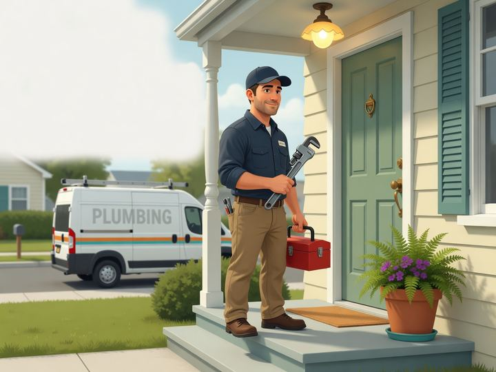
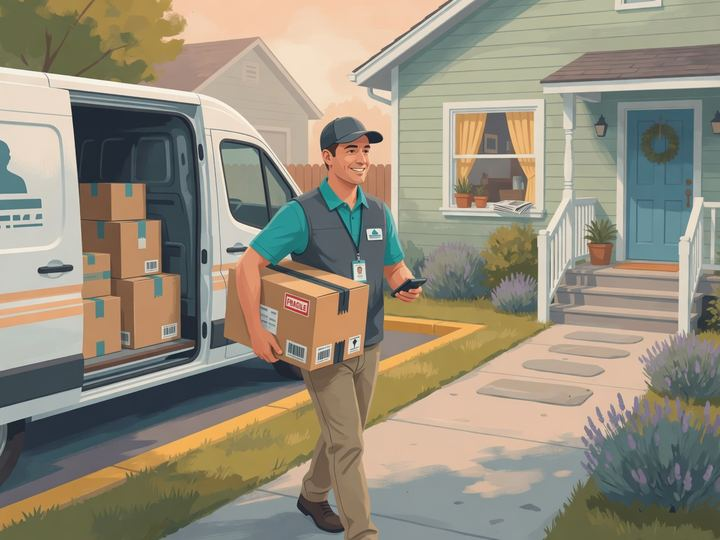
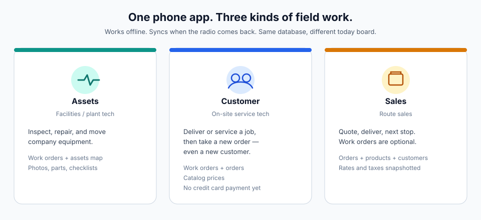
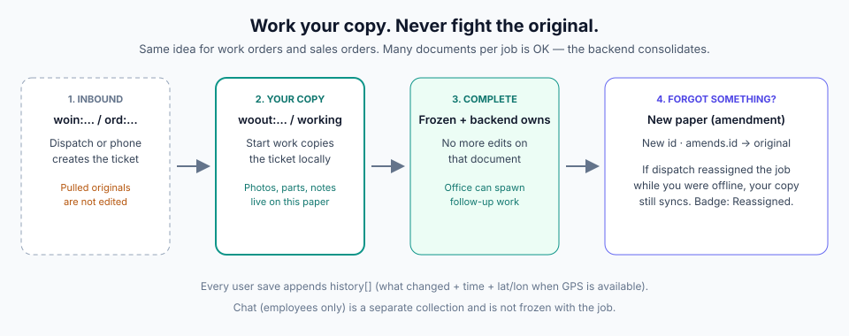
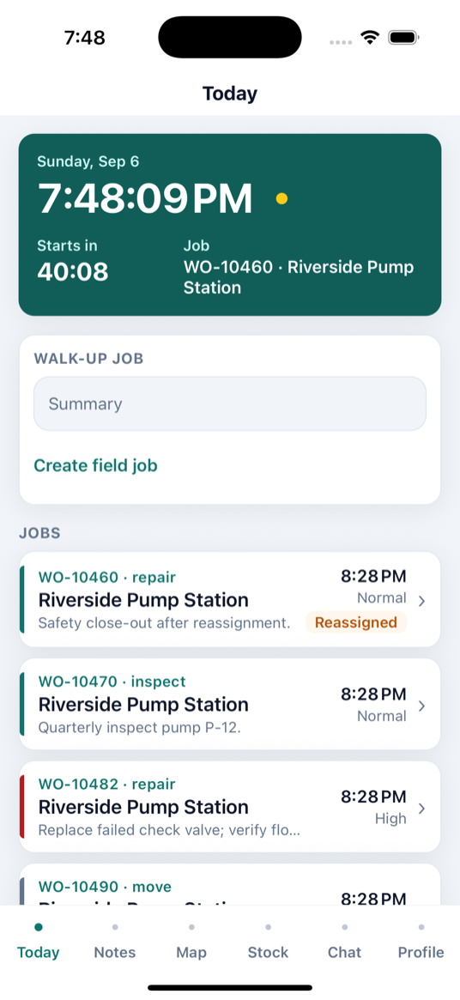
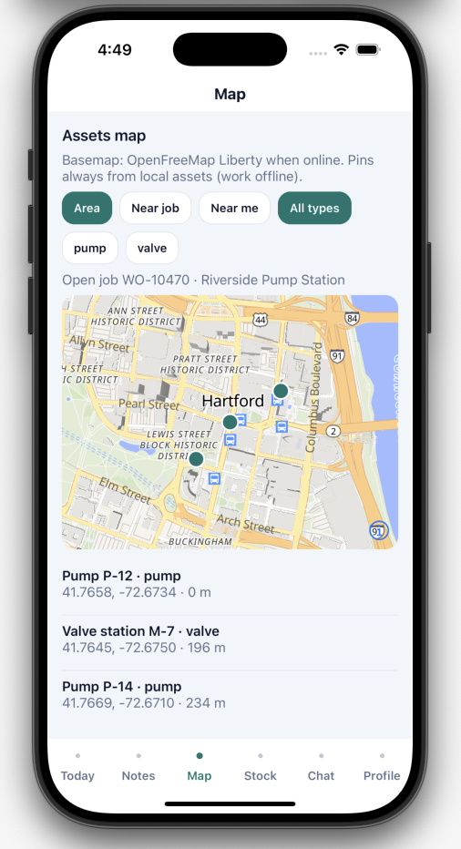
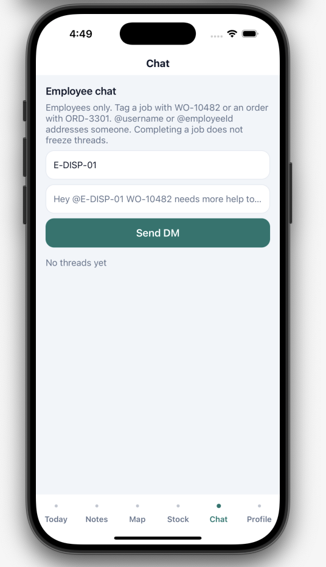
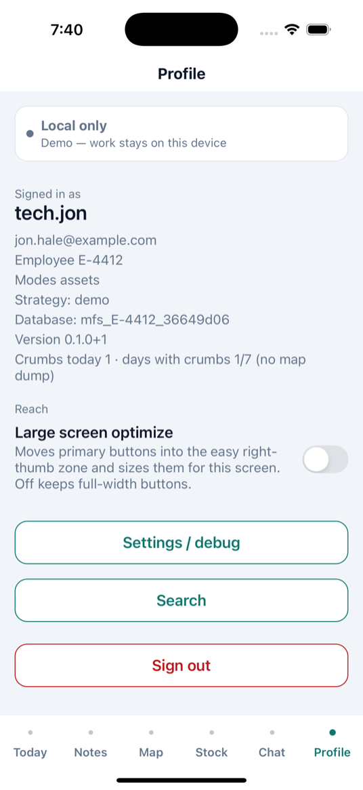
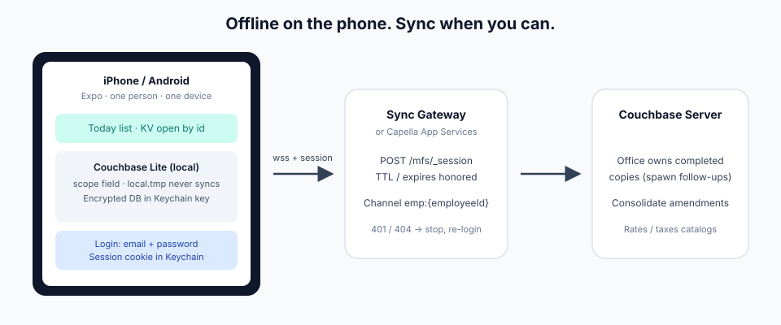

Sync
Easy, fast Today
Today’s jobs and orders land on the phone and go back up when you have a signal. Green dot when you are connected.
Sync today’s jobs or orders fast. Chat with your team about work and customers. Make notes that sync. Find assets or customers on the map. Search your catalog locally — even without a signal.
iOS and Android development builds
Demo: a technician saves a JSON document to Couchbase Lite on the phone, then it syncs through Sync Gateway to a laptop, ERP, and tablet.
What you get
Sync
Today’s jobs and orders land on the phone and go back up when you have a signal. Green dot when you are connected.
Chat
Message the team about jobs and customers. Tag a work order or order. Completing a job does not freeze the thread.
Notes
Make notes on the phone. They sync with the rest of your work — still there if you were in a basement.
Maps
Pins come from the local database, so they still show in airplane mode. The street map needs network.
Stock
Search your catalog of products or assets on the device. No waiting on a warehouse lookup to type a SKU.
One app, three modes
A company turns on the modes it needs. Conflict rules stay the same: copy inbound, freeze on complete, amendments for forgotten facts.

Assets
Jon Hale repairs a powerline from the bucket truck. Map pins stay on the phone in airplane mode.

Customer
Marcus Chen is at the door with wrench and toolbox. He finishes the job, then writes a new order — maybe a new customer — without a card terminal.

Sales
Ravi Shah walks a package from the van to the house, then drives to the next stop. Map tab stays hidden.

How work is designed
Dispatch — or you, on the phone — can create a job ticket. Labor happens on a copy. Completing freezes that copy.

Screens
The tab bar is Today · Notes · Map · Stock · Chat · Profile. Sync for the day, talk to the team, find a pin, search the catalog — on the device.




Sync status
Today keeps replication status on the clock row, immediately after the time.
| You see | Meaning |
|---|---|
| Green dot | Connected to Sync Gateway |
Yellow + 12m / 2h | Not connected; time since last successful sync |
| Number after the dot | Documents waiting to push |
| Red dot | Sync error |
Demo has no replicator, so Today shows a yellow dot and no elapsed/count. Other tabs use a one-line bar: Connected, Not connected, N waiting to send, or Local only.

Couchbase Capella
Couchbase Lite on the phone. Capella App Services is the gateway. The deployment repo stands up bucket mfs, scope field, fourteen collections, and the App Endpoint. local.tmp stays on the device.
Account
No credit card. One operational cluster per organization. It turns off after 72 hours idle.
Deploy
Same schema/mfs.yaml either way. After apply, App User jon.hale@example.com can sync.
Phone
Set EXPO_PUBLIC_SG_URL to the App Endpoint wss://… and EXPO_PUBLIC_SG_DB=mfs.
Documentation
Start with the walkthrough. Then architecture and schemas. The GitHub app repo stays the code; this repo is the HTML.